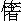

詩曰：
劇賊從未有賊智，其間妙巧亦無窮。
若能收作公家用，何必疆場不立功？
自古說孟嘗君養食客三千，雞鳴狗盜的多收拾在門下。後來被秦王拘留，無計得脫。秦王有個愛姬傳語道：「聞得孟嘗君有領狐白裘，價值千金。若將來送了我，我替他討個人情，放他歸去。」孟嘗君當時只有一領狐白裘，已送上秦王收藏內庫，那得再有？其時狗盜的便獻計道：「臣善狗偷，往內庫去偷將出來便是。」你道何為狗偷？乃是此人善做狗嗥。就假做了狗，爬牆越壁，快捷如飛，果然把狐白裘偷了出來，送與秦宮愛姬，才得善言放脫。連夜行到函谷關。孟嘗君恐怕秦王有悔，後面追來，急要出關。當得關上直等鳴鳴才開。孟嘗君著了急，那時食客道：「臣善雞鳴，此時正用得著。」就曳起聲音，學作雞啼起來，果然與真無二。啼得兩三聲，四下群雞皆啼，關吏聽得，把關開了，孟嘗君才得脫去。孟嘗君平時養了許多客，今脫秦難，卻得此兩小人之力，可見天下寸長尺技，俱有用處。而今世上只重著科目，非此出身，縱有奢遮的，一概不用。所以有奇巧智謀之人，沒處設施，多趕去做了為非作歹的勾當。若是善用人材的，收抬將來，隨宜酌用，未必不得他氣力，且省得他流在盜賊裡頭去了。
且如宋朝臨安有個劇盜，叫做「我來也」，不知姓甚名誰，但是他到人家偷盜了物事，一些蹤影不露出來，只是臨行時壁上寫著「我來也」三個大字。第二日人家看見了字，方才簡點家中，曉得失了賊。若無此字，競是神不知鬼不覺的，煞好手段！臨安中受他蒿惱不過，紛紛告狀。府尹責著緝捕使臣，嚴行挨查，要獲著真正寫「我來也」三字的賊人。卻是沒個姓名，知是張三李四？拿著那個才肯認帳？使臣人等受那比較不過，只得用心體訪。原來隨你巧賊，須瞞不過公人，占風望氣，定然知道的。只因拿得甚緊，畢竟不知怎的緝看了他的真身，解到臨安府裡來。府尹升堂，使臣稟說緝著了真正「我來也」，雖不曉得姓名，卻正是寫這三字的。府尹道：「何以見得？」使臣道：「小人們體訪甚真，一些不差。」那個人道：「小人是良民，並不是甚麼我來也。公人們比較不過，拿小人來冒充的。」使臣道：「的是真正的，賊口聽他不得！」府尹只是疑心。使臣們稟道：「小人們費了多少心機，才訪得著。若被他花言巧語脫了出去，後來小人們再沒處拿了。」府尹欲待要放，見使臣們如此說，又怕是真的，萬一放去了，難以尋他，再不好比較緝捕的了，只得權發下監中收監。
那人一到監中，便好言對獄卒道：「進監的舊例，該有使費，我身邊之物，盡被做公的搜去。我有一主銀兩，在岳廟裡神座破磚之下，送與哥哥做拜見錢。哥哥只做去燒香取了來。」獄卒似信不信，免不得跑去一看，果然得了一包東西，約有二十余兩。獄卒大喜，遂把那人好好看待，漸加親密。一日，那人又對獄卒道：「小人承蒙哥哥盛情，十分看待得好。小人無可報效，還有一主東西在某外橋垛之下，哥哥去取了，也見小人一點敬意。」獄卒道：「這個所在，是往來之所，人眼極多，如何取得？」那人道：「哥哥將個筐籃盛著衣服，到那河裡去洗，摸來放在籃中，就把衣服蓋好，卻不拿將來了？」獄卒依言，如法取了來，沒人知覺。簡簡物事，約有百金之外。獄卒一發喜謝不盡，愛厚那人，如同骨肉。晚間買酒請他。酒中那人對獄卒道：「今夜三更，我要到家裡去看一看，五更即來，哥哥可放我出去一遭。」獄卒思量道：「我受了他許多東西，他要出去，做難不得。萬一不來了怎麼處？」那人見獄卒遲疑，便道：「哥哥不必疑心，小人被做公的冒認做我來也送在此間，既無真名，又無實跡，須問不得小人的罪。小人少不得辨出去，一世也不私逃的。但請哥哥放心，只消的個更次，小人仍舊在此了。」獄卒見他說得有理，想道：「一個不曾問罪的犯人，就是失了，沒甚大事。他現與了我許多銀兩，拼得與他使用些，好歹糊塗得過，況他未必不來的。」就依允放了他。那人不由獄門，竟在屋簷上跳了去。屋瓦無聲，早已不見。
到得天未大明，獄卒宿酒未醒，尚在朦朧，那人已從屋簷跳下。搖起獄卒道：「來了，來了。」獄卒驚醒，看了一看道：「有這等信人！」那人道：「小人怎敢不來，有累哥哥？多謝哥哥放了我去，已有小小謝意，留在哥哥家裡，哥哥快去收拾了來。小人就要別了哥哥，當官出監去了。」獄卒不解其意，急回到家中。家中妻子說：「有件事，正要你回來得知。昨夜更鼓盡時，不知樑上甚麼響，忽地掉下一個包來。解開看時，盡是金銀器物，敢是天錫我們的？」獄卒情知是那人的緣故，急搖手道：「不要露聲！快收拾好了，慢慢受用。」獄卒急轉到監中，又謝了那人。須臾府尹升堂，放告牌出。只見紛紛來告盜情事，共有六七紙。多是昨夜失了盜，牆壁上俱寫得有「我來也」三字，懇求著落緝捕。府尹道：「我元疑心前日監的，未必是真我來也，果然另有這個人在那裡，那監的豈不冤枉？」即叫獄卒吩咐快把前日監的那人放了。另行責著緝捕使臣，定要訪個真正我來也解官，立限比較。豈知真的卻在眼前放去了？只有獄卒心裡明白，伏他神機妙用，受過重賄，再也不敢說破。
看官，你道如此賊人智巧，可不是有用得著他的去處麼？這是舊話，不必說。只是我朝嘉靖年間，蘇州有個神偷懶龍，事跡頗多。雖是個賊，煞是有義氣，兼帶著戲耍，說來有許多好笑好聽處。有詩為證：
誰道偷無道？神偷事每奇。
更看多慷慨，不是俗偷兒。
話說蘇州亞字城東玄妙觀前第一巷有一個人，不曉得他的姓名。後來他自號懶龍，人只稱呼他是懶龍。其母村居，偶然走路遇著天雨，走到一所枯廟中避著，卻是草鞋三郎廟。其母坐久，雨尚不住，昏昏睡去。夢見神道與他交感，歸來有妊。滿了十月，生下這個懶龍來。懶龍生得身材小巧，膽氣壯猛，心機靈變，度量慨慷。且說他的身體行逕：
柔若無骨，輕若御風。大則登屋跳樑，小則捫牆摸壁。隨機應變，看景生情。攝口則為雞犬狸鼠之聲；拍手則作蕭鼓弦素之弄。飲琢有方，律呂相應。無弗酷肖，可使亂真。出沒如鬼神，去來如風雨。果然天下無雙手，真是人間第一偷。懶龍不但伎倆巧妙，又有幾件希奇本事，詫異性格。自小就會著了靴在壁上走，又會說十三省鄉談，夜間可以連宵不睡，日間可以連睡幾日，不茶不飯，象陳摶一般。有時放置一吃，酒數斗飯數升，不彀一飽。有時不吃起來，便動幾日不餓。鞋底中用稻草灰做襯，走步絕無聲響。與人相撲，掉臂往來，倏忽如風。想來《劍俠傳》中白猿公，《水滸傳》中鼓上蚤，其矯捷不過如此。
自古道性之所近，懶龍既有這一番車庶，便自藏埋不住，好與少年無賴的人往來，習成偷兒行逕。一時偷兒中高手有：蘆茄茄（骨瘦如青蘆枝，探丸白打最勝）；刺毛鷹（見人輒隱伏，形如蠆范，能宿梁壁上）；白搭膊（以素練為腰纏，角上掛大鐵鉤，以鉤向上拋擲，遇椽掛便攀緣腰纏上升；欲下亦借鉤力，梯其腰纏，翩然而落）。這數個，多是吳中高手，見了懶龍手段，盡管心伏，自以為不及。懶龍原沒甚家緣家計，今一發棄了，到處為家，人都不曉得他歇在那一個所在。白日行都市中，或閃入人家，但見其影，不見其形。暗夜便竊入大戶朱門尋宿處：玳瑁梁間，鴛鴦樓下，繡屏之內，畫閣之中，縮做刺猥一團，沒一處不是他睡場。得便就做他一手。因是終日會睡，變幻不測如龍，所以人叫他懶龍。所到之處，但得了手，就畫一枝梅花在壁上，在黑處將粉寫白字，在粉牆將煤寫黑字，再不空過，所以人又叫他做一枝梅。
嘉靖初年，洞庭兩山出蛟，太湖邊山崖崩塌，露出一古冢朱漆棺。寶物無數，盡被人盜去無遺。有人傳說到城，懶龍偶同親友泛湖，因到其處。看見藤蔓纏棺，已被斬斷。開發棺中，惟枯骸一具，家旁有斷碑模糊。懶龍道是古來王公之墓，不覺惻然，就與他掩蔽了。即時出些銀兩，僱本處土人聚土埋藏好了，把酒澆奠。奠畢將行，懶龍見草中一物礙腳，俯首取起，乃是古銅鏡一面。急藏襪中，不與人見。及到城中，將往僻處，刷淨泥滓。細看那鏡，小小只有四五寸。面上精光閃爍，背上鼻鈕四傍，隱起窮奇饕餮魚龍波浪之形。滿身青綠，盡蝕硃砂水銀之色。試敲一下，其聲泠然。曉得是件寶貝，將來佩帶身邊。到得晚間，將來一照，暗處皆明，雪白如晝。懶龍得了此鏡，出入不離，夜行更不用火，一發添了一助。別人怕黑時節，他竟同日裡行走，偷法愈便。卻是懶龍雖是偷兒行逕，卻有幾件好處：不肯淫人家婦女，不入良善與患難之家，說了人說話，再不失信。亦且仗義疏財，偷來東西隨手散與貧窮負極之人。最要薅恼那慳吝財主、無義富人，逢場作戲，做出笑話。因此到所在，人多倚草附木，成行逐隊來皈依他，義聲赫然。懶龍笑道：「吾無父母妻子可養，借這些世間余財聊救貧人。正所謂損有餘補不足，天道當然，非關吾的好義也。」
一日，有人傳說一個大商下千金在織人周甲家，懶龍要去取他的。酒後錯認了所在，誤入了一個人家。其家乃是個貧人，房內止有一張大幾。四下一看，別無長物。既已進了房中，一時不好出去，只得伏在幾下。看見貧家夫妻對食，盤餐蕭瑟。夫滿面愁容，對妻道：「欠了客債要緊，別無頭腦可還，我不如死了罷！」妻子道：「怎便尋死？不如把我賣了，還好將錢營生。」說罷，夫妻淚如雨下。懶龍忽然跳將出來，夫妻慌怕。懶龍道：「你兩個不必怕我，我乃懶龍也。偶聽人言，來尋一個商客，錯走至此。今見你每生計可憐，我當送二百金與你，助你經營，快不可別尋道路，如此苦楚！」夫妻素聞其名，拜道：「若得義士如此厚恩，吾夫妻死裡得生了！」懶龍出了門去，一個更次，門內鏗然一響。夫妻走起來看時，果然一個布囊，有銀二百兩在內，乃是懶龍是夜取得商人之物。夫妻喜躍非常，寫個懶龍牌位，奉事終身。
有一貧兒，少時與懶龍游狎，後來消乏。與懶龍途中相遇，身上襤褸，自覺羞慚，引扇掩面而過。懶龍掣住其衣，問道：「你不是某舍麼？」貧兒跼蹐道：「惶恐，惶恐。」懶龍道：「你一貧至此，明日當同你入一大家，取些來付你，勿得妄言！」貧兒曉得懶龍手段，又是不哄人的。明日傍晚來尋懶龍。懶龍與他共至一所，乃是士夫家池館。但見：
暮鴉撩亂，碧樹蒙籠。萬簌淒清，四隅寂靜。
懶龍吩咐貧兒止住在外，自己竦身攀樹逾垣而入，許久不出。貧兒屏氣吞聲，蹲踞牆外。又被群犬嚎吠，趕來咋齧，貧兒繞牆走避。微聽得牆內水響，修有一物如沒水鸕鹚，從林影中墮地。仔細看看，卻是懶龍，渾身沾濕，狀甚狼狽。對貧兒道：「吾為你幾乎送了性命。裡面黃金無數，可以斗量。我已取到了手，因為外邊犬吠得緊，驚醒裡面的人，追將出來。只得丟棄道旁，輕身走脫，此乃子之命也。」貧兒道：「老龍平日手到拿來，今日如此，是我命薄！」歎息不勝。懶龍道：「不必煩惱！改日別作道理。」貧兒怏怏而去。
過了一個多月，懶龍路上又遇著他，哀告道：「我窮得不耐煩了，今日去卜問一卦，遇著上上大吉，財爻發動。先生說當有一場飛來富貴，是別人作成的。我想不是老龍，還那裡指望？」懶龍笑道：「吾幾乎忘了。前日那家金銀一箱，已到手了。若竟把來與你，恐那家發覺，你藏不過，做出事來。所以權放在那家水池內，再看動靜，今已個月期程，不見聲息，想那家不思量追訪了。可以取之無礙，晚間當再去走遭。」貧兒等到薄暮，來約懶龍同往。懶龍一到彼處，但見：
度柳穿花，捷若飛鳥。馳彼濺沫，矯似游龍。
須臾之間，背負一箱而出。急到僻處開看，將著身帶寶鏡一照，裡頭盡是金銀。懶龍分文不取，也不問多少，盡數與了貧兒。吩咐道：「這些財物，可勾你一世了，好好將去用度。不要學我懶龍混帳半生，不做人家。」貧兒感激謝教，將著做本錢，後來竟成富家。懶龍所行之事，每多如此。
說話的，懶龍固然手段高強，難道只這等遊行無礙，再沒有失手時節？看官聽說，他也有遇著不巧，受了窘迫，卻會得逢急智生，脫身溜撒。曾有一日走到人家，見衣櫥開著，急向裡頭藏身，要取櫥中衣服。不匡這家子臨上牀時，將衣廚關好，上了大鎖，竟把懶龍鎖在櫥內了。懶龍出來不得，心生一計，把櫥內衣飾緊纏在身，又另包下一大包，俱挨著櫥門。口裡就做鼠咬衣裳之聲。主人聽得，叫起老嫗來道：「為何把老鼠關在櫥內了？可不咬壞了衣服？快開了櫥趕了出來！」老嫗取火開櫥，才開得門，那挨著門一包兒，先滾了下地。說時遲，那時快，懶龍就這包滾下來，頭裡一同滾將出來，就勢撲滅了老嫗手中之火。老嫗吃驚大叫一聲。懶龍恐怕人起難脫，急取了那個包，隨將老嫗要處一撥，撲的跌倒在地，望外便走。房中有人走起，地上踏著老嫗，只說是賊，拳腳亂下。老嫗喊叫連天，房外人聽得房裡嚷亂，盡奔將來，點起火一照，見是自家人廝打，方喊得住，懶龍不知已去過幾時了。
有一織紡人家，客人將銀子定下綢羅若干。其家夫妻收銀箱內，放在牀裡邊。夫妻同寢在牀，夜夜小心謹守。懶龍知道，要取他的，閃進房去，一腳踏了牀沿，挽手進牀內掇那箱子。婦人驚醒，覺得牀沿上有物，暗中一摸，曉得是只人腳。急用手抱住不放，忙叫丈夫道：「快起來，吾捉住賊腳在這裡了！」懶龍即將其夫之腳，用手抱住一掐。其夫負痛忙喊道：「是我的腳，是我的腳。」婦人認是錯拿了夫腳，即時把手放開。懶龍便掇了箱子如飛出房。夫妻兩人還爭個不清，妻道：「分明拿的是賊腳，你卻教放了。」夫道：「現今我腳掐得生疼，那裡是賊腳？」妻道：「你腳在裡牀，我拿的在外牀，況且吾不曾掐著。」夫道「這等，是賊掐我的腳，你只不要放那只腳便是。」妻道：「我聽你喊將起來，慌忙之中認是錯了，不覺把手放鬆，他便抽得去了，著了他賊見識，定是不好了。」摸摸裡牀，箱子果是不見。夫妻兩個我道你錯，你道我差，互相埋怨不了。
懶龍又走在一個買衣服的鋪裡，尋著他衣庫。正要揀好的捲他，黑暗難認，卻把身邊寶境來照。又道是隔牆須有耳，門外豈無人？誰想隔鄰人家，有人在樓上做房。樓窗看見間壁衣庫亮光一閃，如閃電一般，情知有些尷尬，忙敲樓窗向鋪裡叫道：「隔壁仔細，家中敢有小人了？」鋪中人驚起，口喊「捉賊！」懶龍聽得在先，看見庭中有一隻大醬缸，上蓋篷草，懶龍慌忙揭起，蹲在缸中，仍復反手蓋好。那家人提著燈各處一照，不見影響，尋到後邊去了。懶龍在缸裡想道：「方才只有缸內不曾開看，今後頭尋不見，此番必來。我不如往看過的所在躲去。」又思身上衣已染醬，淋灕開來，掩不得蹤跡。便把衣服卸在缸內，赤身脫出來。把腳蹤印些醬跡在地下，一路到門，把門開了，自己翻身進來，仍入衣庫中藏著。那家人後頭尋了一轉，又將火到前邊來。果然把醬缸蓋揭開看時，卻有一套衣服在內，認得不是家裡的。多道這分明是賊的衣掌了。又見地下腳跡，自缸邊直到門邊，門己洞開。盡管道：「賊見我們尋，慌躲在醬缸裡面。我們後邊去尋時，他卻脫下衣服逃走了。可惜看得遲了些個，不然此時已被我們拿住。」店主人家道：「趕得他去世罷了，關好了門歇息罷。」一家盡道賊去無事，又歷碌了一會，放倒了頭，大家酣睡。詎知賊還在家裡？懶龍安然住在錦繡叢中，把上好衣服繞身系束得緊峭，把一領青舊衣外面蓋著。又把細軟好物，裝在一條布被裡面打做個包兒。弄了大半夜，寂寂負了從屋簷上跳出，這家子沒一人知覺。
跳到街上正走時，天尚黎明，有三四一起早行的人，前來撞著。見懶龍獨自一個負著重囊，侵早行走。疑他來路不正氣，遮住道：「你是甚麼人？在那裡來？說個明白，方放你走。」懶龍口不答應，伸手在肘後摸出一包，團團如球，拋在地下就走。那幾個人多來搶看，見上面牢捲密紮，道他必是好物，爭先來解。解了一層又有一層，就像剝笑殼一般。且是層層捆得緊，剝了一尺多，裡頭還不盡。剩有拳頭大一塊，疑道：「不知裹著甚麼？」眾人不肯住手，還要奪來歷看。那先前解下的多是敝衣破絮，零零落落，堆得滿地。正在鬧嚷之際，只見一伙人趕來道：「你們偷了我家鋪裡衣服，在此分贓麼？」不由分說，拿起器械蠻打將來。眾人呼喝不住，見不是頭，各跑散了。中間拿住一個老頭兒，天色騷黑之中，也不來認面龐，一步一棍，直打到鋪裡。老頭兒一里亂叫亂喊道：「不要打，不要打，你們錯了。」眾人多是興頭上，人住馬不住，那裡聽他？
看看天色大明，店主人仔細一看，乃是自家親家翁，在鄉裡住的。連忙喝住眾人，已此打得頭虛面腫。店主人忙陪不是，置酒請罪。因說失賊之事，老頭兒方訴出來道：「適才同兩三個鄉裡人作伴到此，天未明亮，因見一人背馱一大囊行走，正攔住盤問，不匡他丟下一件包裹，多來奪看，他乘鬧走了。誰想一層一層多是破衣敗絮，我們被他哄了，不拿得他。卻被這裡人不分皂白，混打這番，把同伴人驚散。便宜那賊骨頭，又不知走了多少路了。」眾人聽見這話，大家驚侮。鄰里聞知某家捉賊，錯打了親家公，傳為笑話。原來那個球，就是懶龍在衣櫥裡把閑工結成，帶在身邊，防人尾追，把此拋下做緩兵之計的。這多是他臨危急智脫身巧妙之處，有詩為證：
巧技承蜩與弄丸，當前賣弄許多般。
雖然賊態何堪述，也要臨時猝智難。
懶龍神偷之名，四處布聞。衛中巡捕張指揮訪知，叫巡軍拿去。指揮見了問道：「你是個賊的頭兒麼？」懶龍道：「小人不曾做賊，怎說是賊的頭兒？小人不曾有一毫贓私犯在公庭，亦不曾見有竊盜賊伙板及小人，小人只為有些小智巧，與親戚朋友作耍之事，間或有之。爺爺不要見罪小人，或者有時用得小人著，水裡火裡，小人不辭。」指揮見他身材小巧，語言爽快，想道無贓無證，難以罪他。又見說肯出力，思量這樣人有用處，便沒有難為的意思。正說話間，有個閶門陸小閑將一隻紅嘴綠鸚哥來獻與指揮。指揮教把鎖鐙掛在簷下，笑對懶龍道：「聞你手段通神，你雖說戲耍無贓，偷人的必也不少。今且權恕你罪，我只要看你手段。你今晚若能偷得我這鸚哥去，明日送來還我，凡事不計較你了。」懶龍道：「這個不難，容小人出去，明早送來。」懶龍叩頭而出。指揮當下吩咐兩個守夜軍人，小心看守架上鸚哥，倘有疏失，重加貴治。兩個軍人聽命，守宿在簷下，一步不敢走離。雖是眼皮壓將下來，只得勉強支持。一陣盹睡，聞聲驚醒，甚是苦楚。
夜已五鼓，懶龍走在指揮書房屋脊上，挖開椽子，溜將下來。只見衣架上有一件沉香色潞綢披風，幾上有一頂華陽中，壁上掛一盞小行燈，上寫著「蘇州衛堂」四字。懶龍心思有計，登時把衣中來穿戴了，袖中拿出火種，吹起燭煤，點了行燈，提在手裡，裝著老張指揮聲音步履，儀容氣度，無一不像。走到中堂壁門邊，把門猛然開了。遠遠放住行燈，踱出廊簷下來。此時月色蒙龍，天色昏慘，兩個軍人大盹小盹，方在困倦之際。懶龍輕輕剔他一下道：「天色漸明，不必守了，出去罷。」一頭說，一頭伸手去提了鸚哥鎖鐙，望中門裡面搖擺了進去。兩個軍人閉眉刷眼，正不耐煩，聽得發放，猶如九重天上的赦書來了，那裡還管甚麼好歹？一道煙去了。
須臾天明，張指揮走將出來，鸚哥不見在簷下。急喚軍人問他，兩個多不在了。忙叫拿來，軍人還是殘夢未醒。指揮喝道：「叫你們看守鸚哥，鸚哥在那裡？你們倒在外邊來！」軍人道：「五更時，恩主親自出來取了鸚哥進去，發放小人們歸去的，怎麼反問小人要鸚哥？」指揮道：「胡說！我何曾出來？你們見鬼了。」軍人道：「分明是恩主親自出來，我們兩個人同在那裡，難道一齊眼花了不成？」指揮情知尷尬，走到書房，仰見屋椽有孔道，想必在這裡著手去了。正持疑間，外報懶龍將鸚哥送到。指揮含笑出來，問他何由偷得出去，懶龍把昨夜著衣戴巾、假裝主人取進鸚哥之事，說了一遍。指揮驚喜，大加親幸。懶龍也時常有些小孝順，指揮一發心腹相托，懶龍一發安然無事了。普天下巡捕官偏會養賊，從來如此。有詩為證：
貓鼠何當一處眠？總因有味要垂涎。
由來捕盜皆為盜，賊黨安能不熾然？
雖如此說，懶龍果然與人作戲的事體多。曾有一個博徒在賭場得了採，背負千錢回家，路上撞見懶龍。博徒指著錢戲懶龍道：「我今夜把此錢放在枕頭底下，你若取得去，明日我輸東道。若取不去，你請我吃東道。」懶龍笑道：「使得，使得。」博徒歸家中對妻子說：「今日得了採，把錢藏在枕下了。」妻子心裡歡喜，殺一隻雞烫酒共吃。雞吃不完，還剩下一半，收拾在廚中，上牀同睡。又說了與懶龍打賭賽之事。夫妻相戒，大家醒覺些個。豈知懶龍此時已在窗下，一一聽得。見他夫婦惺聰，難以下手，心生一計。便走去灶下，拾根麻骨放在口中，嚼得畢剝有聲，竟似貓兒吃雞之狀。婦人驚起道：「還有老大半只雞，明日好吃一餐，不要被這亡人抱了去。」連忙走下牀來，去開廚來看。懶龍閃入天井中，將一塊石拋下井裡「洞」的一聲響。博徒聽得驚道：「不要為這點小小口腹，失腳落在井中了，不是耍處。」急出門來看時，懶龍已隱身入房，在枕下挖錢去了。夫婦兩人黑暗裡叫喚相應，方知無事，挽手歸房。到得牀裡，只見枕頭移開，摸那錢時，早已不見。夫妻互相怨悵道：「清清白白，兩個人又不曾睡著，卻被他當面作弄了去，也倒好笑。」到得天明，懶龍將錢來還了，來索東道。博徒大笑，就勒下幾百放在袖裡，與懶龍前到酒店中，買酒請他。兩個飲酒中間，細說昨日光景，拍掌大笑。
酒家翁聽見，來問其故，與他說了。酒家翁道：「一向聞知手段高強，果然如此。」指著桌上錫酒壺道：「今夜若能取得此壺去，我明日也輸一個東道。」懶龍笑道：「這也不難。」酒家翁道：「我不許你毀門坏戶，只在此桌上，憑你如何取去。」懶龍道：「使得，使得。」起身相別而去。酒家翁到晚吩咐牢關門戶，自家把燈四處照了，料道進來不得。想道：「我停燈在桌上了，拼得坐著守定這壺，看他那裡下手？」酒家翁果然坐到夜分，絕無影響。意思有些不耐煩了，倦急起來，磕睡到了。起初還著實勉強，支撐不過，就斜靠在桌上睡去，不覺大鼾。懶龍早已在門外聽得，就悄悄的扒上屋脊，揭開屋瓦，將一豬脬緊紮在細竹管上。竹管是打通中節的，徐徐放下，插入酒壺口中。酒店裡的壺，多是肚寬頸窄的。懶龍在上邊把一口氣從竹管裡吹出去，那豬脬在壺內漲將開來，已滿壺中。懶龍就掐住竹管上眼，便把酒壺提將起來。仍舊蓋好屋瓦，不動分毫。酒家翁一覺醒來，桌上燈還未滅，酒壺已失。急起四下看時，窗戶安然，毫無漏處，竟不知甚麼神通攝得去了。
又一日，與二三少年同立在北潼子門酒家。河下船中有個福建公子，令從人將衣被在船頭上曬曝，錦繡璨爛，觀者無不嘖嘖。內中有一條被，乃是西洋異錦，更為奇特。眾人見他如此炫耀，戲道：「我們用甚法取了他的，以博一笑才好？」盡推懶龍道：「此時懶龍不逞技倆，更待何時？」懶龍笑道：「今夜讓我弄了他來，明日大家送還他，要他賞錢，同諸公取醉。」懶龍說罷，先到混堂把身上洗得潔淨，再來到船邊看相動靜。守到更點二聲，公子與眾客盡帶酣意，潦倒模糊。打一個混同鋪，吹正了燈，一齊藉地而寢。懶龍倏忽閃爍，已雜入眾客鋪內，挨入被中。說著閩中鄉談，故意在被中挨來擠去。眾客睡不象意，口裡和羅埋怨。懶龍也作閩音說睡話，趁著挨擠雜鬧中，扯了那條異錦被，捲作一束。就作睡起要瀉溺的聲音，公然拽開艙門，走出瀉溺，逕跳上岸去了，船中諸人一些不覺。及到天明，船中不見錦被，滿艙鬧嚷。公子甚是歎惜，與眾客商量，要告官又不直得，要住了又不捨得。只得許下賞錢一千，招人追尋蹤跡。懶龍同了昨日一千人下船中，對公子道：「船上所失錦被，我們已見在一個所在，公子發出賞錢，與我們弟兄買酒吃，包管尋來奉還。」公子立教取出千錢來放著，待被到手即發。懶龍道：「可叫管家隨我們去取。」公子吩咐親隨家人同了一伙人走到徽州當內，認得錦被，正是元物。親隨便問道：「這是我船上東西，為何在此？」當內道：「早間一人拿此被來當。我們看見此錦，不是這裡出的，有些疑心，不肯當錢與他。那個人道：『你每若放不下時，我去尋個熟人來，保著秤銀子去就是。』我們說這個使得。那人一去竟不來了。我元道必是來歷不明的，既是尊舟之物，拿去便了。等那個人來取時，小當還要捉住了他，送到船上來。」眾人將了錦被去還了公子，就說當中說話。公子道：「我們客邊的人，但得元物不失罷了，還要尋那賊人怎的？」就將出千錢，送與懶龍等一伙報事的人。眾人收受，俱到酒店裡破除了。原來當裡去的人，也是懶龍央出來，把錦被卸脫在那裡，好來請賞的。如此作戲之事，不一而足。正是：
臚傳能發冢，穿窬何足薄？
若托大儒言，是名善戲謔。
懶龍固然好戲，若是他心中不快意的，就連真帶耍，必要擾他。有一伙小偷置酒邀懶龍游虎丘。船控山塘，暫停米店門口河下。穿出店中買柴沽酒，米店中人嫌他停泊在此出入攪擾，厲聲推逐，不許系纜。眾偷不平爭嚷。懶龍丟個眼色道：「此間不容借走，我們移船下去些，別尋好上岸處罷了，何必動氣？」遂教把船放開，眾人還忿忿。懶龍道：「不須角口，今夜我自有處置他所在。」眾人請問，懶龍道：「你們去尋一隻站船來，今夜留一樽酒。一個磕及暖酒家火薪炭之類，多安放船中。我要歸途一路賞月色到天明。你們明日便知，眼下不要說破。」是夜虎丘席罷，眾人散去。懶龍約他明日早會。止留得一個善飲的為伴，一個會行船的持篙，下在站船中回來。經過米店河頭，店中已扁閉得嚴密。其時河中賞月歸舟歡唱過往的甚多。米店裡頭人安心熟睡。懶龍把船貼米店板門住下。日間看在眼裡，有十一囤在店角落中，正臨水次近板之處。懶龍袖出小刀，看板上有節處一挖，那塊木節囫圖的落了出來，板上老大一孔。懶龍腰間摸出竹管一個，兩頭削如藕披，將一頭在板孔中插入米囤，略擺一擺，只見囤內米簌簌的從管裡瀉將下來，就如注水一般。懶龍一邊對月舉杯，酣呼跳笑，與瀉米之聲相雜，來往船上多不知覺。那家子在裡面睡的，一發夢想不到了。看看斗轉參橫，管中沒得瀉下，想來囤中已空，看那船艙也滿了。便叫解開船纜，慢慢的放了船去，到一僻處，眾偷皆來。懶龍說與緣故，盡皆撫拿大笑。懶龍拱手道：「聊奉列位眾分，以答昨夜盛情。」竟自一無所取。那米店直到開囤，才知其中已空，再不曉得是幾時失去，怎麼樣失了的。
蘇州新興百柱帽，少年浮浪的無不戴著裝幌。南園側東道堂白雲房一起道士，多私下置一頂，以備出去游耍，好裝俗家。一日夏月天氣，商量游虎丘，已叫下酒船。百個紗王三，乃是王織紗第三個兒子，平日與眾道士相好，常合伴打平火。眾道士嫌他慣討便宜，且又使酒難堪，這番務要瞞著了他。不想紗王三已知道此事，恨那道士不來約他，卻尋懶龍商量，要怎生敗他遊興。懶龍應允，即閃到白雲房將眾道常戴板巾盡取了來。紗王三道：「何不取了他新帽，要他板巾何用？」懶龍道：「若他失去了新帽，明日不來遊山了，有何趣味？你不要管，看我明日消遣他。」紗王三終是不解其意，只得由他。明日，一伙道士輕衫短帽，裝束做少年子弟，登舟放浪。懶龍青衣相隨下船，蹲坐舵樓。眾道只道是船上人，船家又道是跟的侍者，各不相疑。開得船時，眾道解衣脫帽，縱酒歡呼。懶龍看個空處，將幾頂新帽捲在袖裡，腰頭摸出昨日所取幾頂板巾，放在其處。行到斟酌橋邊，攏船近岸，懶龍已望岸上跳將去了。一伙道士正要著衣帽登岸瀟灑，尋帽不見，但有常戴的紗羅板巾，壓揩整齊，安放做一堆在那裡。眾道大嚷道「怪哉！聖哉！我們的帽子多在那裡去了？」船家道：「你們自收拾，怎麼問我？船不漏針，料沒失處。」眾道又各尋了一遍，不見蹤影，問船家道：「方才你船上有個穿青的瘦小漢子，走上岸去，叫來問他一聲，敢是他見在那裡？」船家道：「我船上那有這人？是跟隨你們下來的。」眾道嚷道：「我們幾曾有人跟來？這是你串同了白日撞偷了我帽子去了。我們帽子幾兩一頂結的，決不與你干休！」扭住船家不放。船家不伏，大聲嚷亂。岸上聚起無數人來，蜂擁爭看。
人叢中走出一個少年子弟，撲的跳下船來道：「為甚麼喧鬧？」眾道與船家各各告訴一番。眾道認得那人，道是決幫他的。不匡那人正色起來，反責眾道道：「列位多是羽流，自然只戴板巾上船。今板巾多在，那裡再有甚麼百柱帽？分明是誣詐船家了。」看的人聽見，才曉得是一伙道士，板巾見在，反要詐船上賠帽子，發起喊來，就有那地方游手好閑幾個攬事的光棍來出尖，伸拳擄手道：「果是賊道無理，我們打他一頓，拿來送官。」那人在船裡搖手指住道：「不要動手！不要動手！等他們去了罷。」那人忙跳上岸。眾道怕惹出是非來。叫快開了船。一來沒了帽子，二來被人看破，裝幌不得了，不好登山，怏怏而回。枉費了一番東道，落得掃興。你道跳下船來這人是誰？正是紗王三。懶龍把板巾換了帽子，知會了他，趁擾壤之際，特來證實道土本相，掃他這一場。道士回去，還纏住船家不歇。紗王三叫人將幾頂帽子送將來還他，上復道：「已後做東道要灑浪那帽子時，千萬通知一聲。」眾道才曉得是紗王三耍他，又曾聞懶龍之名，曉得紗王三平日與他來往，多是懶龍的做作了。
其時鄰境無錫有個知縣，貪婪異常，穢聲狼藉。有人來對懶龍道：「無錫縣官衙中金寶山積，無非是不義之財。何不去取他些來，分惠貧人也好？」懶龍聽在肚裡，即往無錫地方，晚間潛入官舍中，觀看動靜。那衙裡果然富貴，但見：
連箱錦綺，累架珍奇。元寶不用紙包，疊成行列；器皿半非陶就，擺滿金銀。大象口中牙，蠢婢將來揭火；犀牛頭上角，小兒拿去盛湯。不知夏楚追呼，拆了人家幾多骨肉；更兼苞直混濫，捲了地方到處皮毛。費盡心要傳家裡子孫，腆著面且認民之父母。
懶龍看不盡許多

華，想道：「重門深鎖，外邊梆鈴之聲不絕，難以多取。」看見一個小匣，十分沉重，料必是精金白銀，溜在身邊。心裡想道：「官府衙中之物，省得明日胡猜亂猜，屈了無干的人。」摸出筆來，在他箱架邊牆上，畫著一技梅花，然後輕輕的從屋搪下望衙後出去了。過了兩三日，知縣簡點宦囊。不見一個專放金子的小匣兒，約有二百余兩金子在內，價值一千多兩銀子。各處尋看，只見旁邊畫著一枝梅，墨跡尚新。知縣吃驚道：「這分明不是我衙裡人了，臥房中誰人來得，卻又從容畫梅為記？此不是個尋常之盜。必要查他出來。」遂喚取一班眼明手快的應捕，進衙來看賊跡。眾應捕見了壁上之畫，吃驚道：「覆官人，這賊小的們曉得了，卻是拿不得的。此乃蘇州城中神偷，名曰懶龍。身到之處，必寫一枝梅在失主家為認號。其人非比等閑手段，出有入無，更兼義氣過人，死黨極多。尋他要緊，怕生出別事來。失去金銀還是小事，不如放舍罷了，不可輕易惹他。」知縣大怒道：「你看這班奴才，既曉得了這人名字，豈有拿不得的？你們專慣與賊通同，故意把這等話黨庇他，多打一頓大板才好！今要你們拿賊，且寄下在那裡。十日之內，不拿來見我，多是一個死！」應捕不敢回答。知縣即喚書房寫下捕盜批文，差下捕頭兩人，又寫下關子，關會長、吳二縣，必要拿那懶龍到官。
應捕無奈，只得到蘇州來走一遭。正進閶門，看見懶龍立在門口，應捕把他肩甲拍一拍道：「老龍，你取了我家官人東西罷了，賣弄甚麼手段畫著梅花？今立限與我們，必要拿你到官，卻是如何？」懶龍不慌不忙道：「不勞二位費心，且到店中坐坐細講。」懶龍拉了兩個應捕一同到店裡來，占副座頭吃酒。懶龍道：「我與兩位商量，你家縣主果然要得我緊，怎麼好累得兩位？只要從容一日，待我送個信與他，等他自然收了牌票，不敢問兩位要我，何如？」應捕道：「這個雖好，只是你取得他的忒多了。他說多是金子，怎麼肯住手？我們不同得你去，必要為你受虧了。」懶龍道：「就是要我去，我的金子也沒有了。」應捕道：「在那裡了？」懶龍道：「當下就與兩位分了。」應捕道：「老龍不要取笑！這樣話當官不是耍處。」懶龍道：「我平時不曾說誑語，原不取笑。兩位到宅上去一看便見。」扯著兩個人耳朵說道：「只在家裡瓦溝中去尋就有。」應捕曉得他手段，忖道：「萬一當官這樣說起來，真個有贓在我家裡，豈不反受他累？」遂商量道：「我們不敢要老龍去了，而今老龍待怎麼吩咐？」懶龍道：「兩位請先到家，我當隨至。包管知縣官人不敢提起，決不相累就罷了。」腰間摸出一包金子，約有二兩重，送與兩人道：「權當盤費。」從來說公人見錢，如蒼蠅見血，兩個應捕看見赤豔豔的黃金，怎不動火？笑欣欣接受了，就想此金子未必不就是本縣之物，一發不敢要他同去了，兩下別過。
懶龍連夜起身，早到無錫，晚來已閃入縣令衙中。縣官有大、小孺人，這晚在大孺人房中宿歇。小孺獨自在帳中，懶龍揭起帳來，伸手進去一摸，摸著頂上青絲髻，真如盤龍一般。懶龍將剪子輕輕剪下，再去尋著印箱，將來撬開，把一盤發髻塞在箱內，仍與他關好了。又在壁上畫下一枝梅。別樣不動分毫，輕身脫走。次日，小孺人起來，忽然頭髮紛披，覺得異樣。將手一模，頂髻俱無，大叫起來。合衙驚怪，多跑將來問緣故。小孺人哭道：「誰人使促掐，把我的頭髮剪去了？」忙報知縣來看。知縣見帳裡坐著一個頭陀，不知那裡作怪起？想若平日綠雲委地，好不可愛！今卻如此模樣，心裡又痛又驚道：「前番金子失去，尚在嚴捉未到，今番又有歹人進衙了。別件猶可，縣印要緊。」函取印箱來看，看見封皮完好，鎖鑰俱在。隨即開來看時，印章在上格不動，心裡略放寬些。又見有頭髮纏繞，掇起上格，底下一堆發髻，散在箱裡。再簡點別件，不動分毫。又見壁上畫著一枝梅，連前湊做一對了。知縣嚇得目睜口呆，道：「原來又是前番這人，見我追得急了，他弄這神通出來報信與我。剪去頭髮，分明說可以割得頭去，放在印箱裡，分明說可以盜得印去。這賊直如此利害！前日應捕們勸我不要惹他，原來果是這等。若不住手，必遭大害。金子是小事，拼得再做幾個富戶不著，便好補填了，不要追究的是。」連忙掣簽去喚前日差往蘇州下關文的應捕來銷牌。兩個應捕自那日與懶龍別後，來到家中。依他說話，各自家裡屋瓦中尋，果然各有一包金子。上寫著日月封記，正是前日縣間失賊的日子。不知懶龍幾時送來藏下的。應捕老大心驚，噙指頭道：「早是不拿他來見官，他一口招出搜了贓去，渾身口洗不清。只是而今怎生回得官人的話？」叫了伙計，正自商量躊躇，忽見縣裡差簽來到。只道是拿違限的，心裡慌張，誰知卻是來叫銷牌的！應捕問其緣故，來差把衙中之事一一說了，道：「官人此時好不驚怕，還敢拿人？」應捕方知懶龍果不失信，已到這裡弄了神通了，委實好手段！
嘉靖末年，吳江一個知縣治行貪穢，心術狡狠。忽差心腹公人，齎了聘禮到蘇城求訪懶龍，要他到縣相見。懶龍應聘而來，見了知縣稟道：「不知相公呼喚小人那廂使用？」知縣道：「一向聞得你名，有一機密事要你做去。」懶龍道：「小人是市井無賴，既蒙相公青目，要乾何事，小人水火不避。」知縣屏退左右，密與懶龍商量道：「叵耐巡按御史到我縣中，只管來尋我的不是。我要你去察院衙裡偷了他印信出來，處置他不得做官了，方快我心！你成了事，我與你百金之賞。」懶龍道：「管取手到拿來，不負台旨。」果然去了半夜，把一顆察院印信弄將出來，雙手遞與知縣。知縣大喜道：「果然妙手，雖紅線盜金盒，不過如此神通罷了。」急取百金賞了懶龍，吩咐他快些出境，不要留在地方。懶龍道：「我謝相公厚賜，只是相公要此印怎麼？」知縣笑道：「此印已在我手，料他奈何我不得了。」懶龍道：「小人蒙相公厚德，有句忠言要說。」知縣道：「怎麼？」懶龍道：「小人躲在察院樑上半夜，偷看巡按爺燭下批詳文書，運筆如飛，處置極當。這人敏捷聰察，瞞他不過的。相公明白不如竟將印信送還，只說是夜巡所獲，賊已逃去。御史爺縱然不能無疑，卻是又感又怕，自然不敢與相公異同了。」縣令道：「還了他的，卻不依舊讓他行事去？豈有此理！你自走你的路，不要管我！」懶龍不敢再言，潛蹤去了。
卻說明日察院在私衙中開印來用，只剩得空匣。叫內班人等遍處尋覓，不見蹤跡。察院心裡道：「再沒處去，那個知縣曉得我有些不像意他，此間是他地方，奸細必多，叫人來設法過了，我自有處。」吩咐眾人不得把這事泄漏出去，仍把印匣封鎖如常，推說有病，不開門坐堂。一應文移，權發巡捕官收貯。一連幾日，知縣曉得這是他心病發了，暗暗笑著，卻不得不去問安。察院見傳報知縣來到，即開小門請進。直請到內衙牀前，歡然談笑。說著民風土俗、錢糧政務，無一不剖膽傾心，津津不已。一茶未了，又是一茶。知縣見察院如此肝膈相待，反覺局脊，不曉是甚麼緣故。正絮話間，忽報廚房發火，內班門皂廚役紛紛趕進，只叫「燒將來了！爺爺快走！」察院變色，急走起來，手取封好的印匣親付與知縣道：「煩賢令與我護持了出去，收在縣庫，就撥人夫快來救火。」知縣慌忙失錯，又不好推得，只得抱了空匣出來。此時地方水夫俱集，把火救滅，只燒得廚房兩間，公廨無事。察院吩咐把門關了。這個計較，乃是失印之後察院預先吩咐下的。知縣回去思量道：「他把這空匣交在我手，若仍舊如此送還，他開來不見印信，我這干係須推不去。」展轉無計，只得潤開封皮，把前日所偷之印仍放匣中，封鎖如舊。明日升堂，抱匣送還。察院就留住知縣，當堂開驗印信，印了許多前日未發放的公文。就於是日發牌起馬，離卻吳江。卻把此話告訴了巡撫都堂。兩個會同把這知縣不法之事，參奏一本，論了他去。知縣臨去時，對衙門人道：「懶龍這人是有見識的，我悔不用其言，以至於此。」正是：
枉使心機，自作之孽，
無梁不成，反輸一貼。
懶龍名既流傳太廣，未免別處賊情也有疑猜著他的，時時有些株連著身上。適遇蘇州府庫失去元寶十來錠，做公的私自議論道：「這失去得沒影響，莫非是懶龍？」懶龍卻其實不曾偷，見人錯疑了他，反要打聽明白此事。他心疑是庫吏知情，夜藏府中公廨黑處，走到庫吏房中靜聽。忽聽庫吏對其妻道：「吾取了庫銀，外人多疑心懶龍，我落得造化了。卻是懶龍怎肯應承？我明日把他一生做賊的事跡，墓成一本送與府主，不怕不拿他來做頂缸。」懶龍聽見，心裡思量道：「不好，不好。本是與我無干，今庫吏自盜，他要卸罪，官面前暗栽著我。官吏一心，我又不是沒一點黑跡的，怎辨得明白？不如逃去了為上著，免受無端的拷打。」連夜起身，竟走南京。詐妝了雙盲的，在街上賣卦。蘇州府太倉夷亭有個張小舍，是個有名極會識賊的魁首。偶到南京街上撞見了，道：「這盲子來得蹊蹺！」仔細一相，認得是懶龍詐妝的，一把扯住，引他到僻靜處道：「你偷了庫中元寶，官府正追捕，你卻遁來這裡妝此模樣躲閃麼？你怎生瞞得我這雙眼過？」懶龍挽了小舍的手道：「你是曉得我的，該替我分剖這件事，怎麼也如此說？那庫裡銀子是庫吏自盜了。我曾聽得他夫妻二人牀中私語，甚是的確。他商量要推在我身上，暗在官府處下手。我恐怕官府信他說話，故逃亡至此。你若到官府處把此事首明，不但得了府中賞錢，亦且辨明瞭我事，我自當有薄意孝敬你。今不要在此處破我的道路！」
小舍原受府委要訪這事的，今得此的信，遂放了懶龍，走回蘇州出首。果然在庫吏處，一追便見，與懶龍並無干涉。張小舍首盜得實，受了官賞。過了幾時，又到南京。撞見懶龍，仍妝著盲子在街上行走。小舍故意撞他一肩道：「你蘇州事已明，前日說話的怎麼忘了？」懶龍道：「我不曾忘，你到家裡灰堆中去看，便曉得我的薄意了。」小舍欣然道：「老龍自來不掉謊的。」別了回去，到得家裡，便到灰中一尋。果然一包金銀同著白晃晃一把快刀，埋在灰裡。小舍伸舌道：「這個狠賊！他怕我只管纏他，故雖把東西謝我，卻又把刀來嚇我。不知幾時放下的，真是神手段！我而今也不敢再惹他了。」
懶龍自小舍第二番遇見回他蘇州事明，曉得無礙了。恐怕終久有人算他，此後收拾起手段，再不試用。實實賣卜度日，棲遲長於寺中數年，竟得善終。雖然做了一世劇賊，並不曾犯官刑、刺臂字。到今蘇州人還說他狡獪耍笑事體不盡。似這等人，也算做穿窬小人中大俠了。反比那面是背非、臨財苟得、見利忘義一班峨冠傅帶的不同。況兼這番神技，若用去偷營劫寨，為間作諜，那裡不乾些事業？可惜太平之世，守文之時，只好小用伎倆，供人話柄而已。正是：
世上於今半是君，猶然說得未均勻。
懶龍事跡從頭看，豈必穿窬是小人！
本章完!